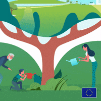
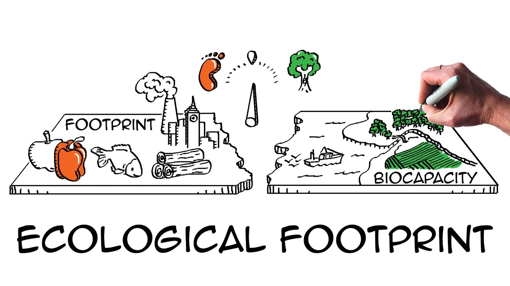
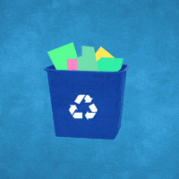
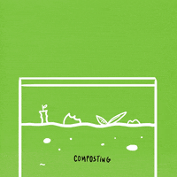
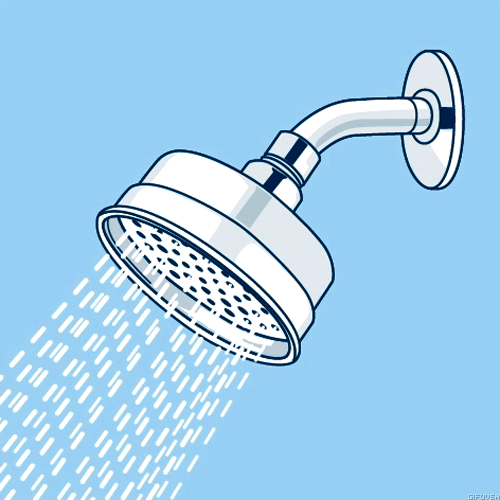
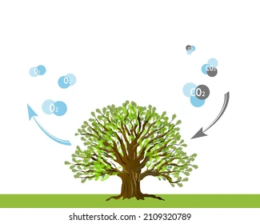
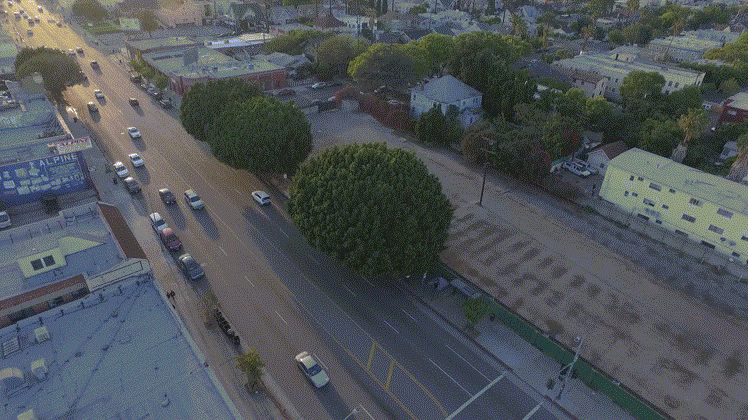

Why Take Action?
Biology shows us how interconnected life is. Human actions impact ecosystems, but small changes can restore balance and promote sustainability. Click the images below to learn how you can help!


Reduce Waste
Waste pollutes ecosystems and harms wildlife. By recycling, composting, and using reusable items, you can minimize landfill contributions and protect natural habitats. Explore these steps below!


Conserve Water
Freshwater ecosystems are vital for life. Fixing leaks, using water-saving appliances, and collecting rainwater help preserve these resources. Click to discover water-saving tips!


Plant Trees
Trees absorb CO2, provide oxygen, and support biodiversity. Planting native trees in your community strengthens ecosystems. Learn more by clicking below!

